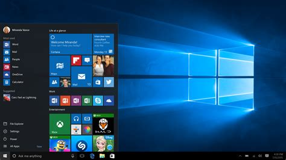
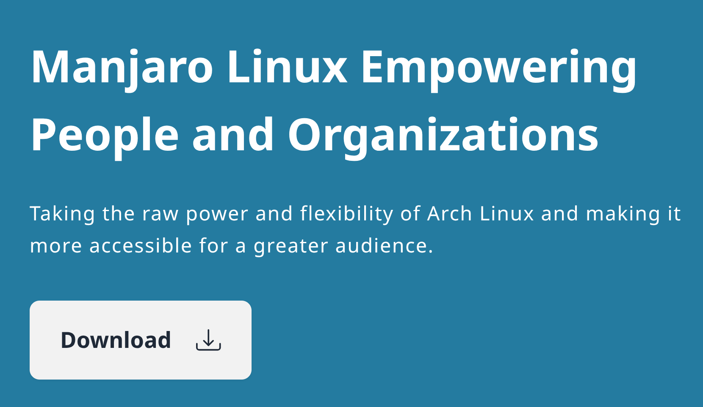
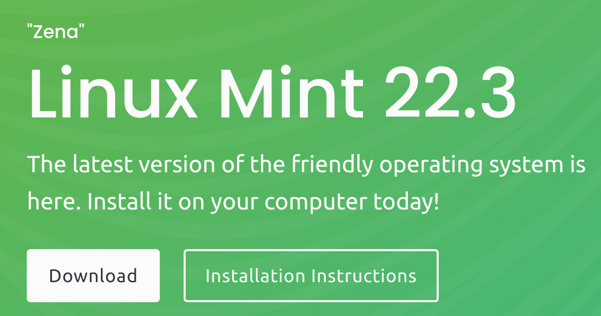

My Last Arch OS page
Click this Link to take you to My Last Arch OS information. This is an OS I created based on Arch Linux. You can read all about it here.
Click this Link to take you to My Last Arch OS information. This is an OS I created based on Arch Linux. You can read all about it here.
Has your password or other data been stolen due to a Data Breach? This seems to be happening a lot these days.
Personally I am getting sick and tired of opening up news on my phone or laptop and reading another article of some data breach happening.
These articles always tell me to change my password, use a password manager and make sure I use complicated passwords.
All that is great except for the fact that most of the time they already have your password so in my opinion it doesn't matter how strong of a password you made because they have it.
So what do you do?
Well considering that this is our reality that there is always going to be someone somewhere stealing your information you have only a couple of choices.
1. Leave the online world. Probably not a good solution since your data is out there already and you will never be able to erase it all.
2. Start a process to keep your data secure as you deem necessary for your own peace of mind.
So here is a process that I have not done yet as of writing this article but I will be putting into practice soon.
I would suggest that you use a password manager to start with. I currently use Bitwarden. It is free and it syncs across all of your devices. All you need to remember is one password and it will fill in the username and password for you on websites and forms. You can make your passwords as complicated as you want. It is probably a good idea to make them pretty stong. But if they have been stolen it doesn't much matter.
This is the next step that is more difficult to do. Start a process to change your password on sites that will get your money stolen such as banking websites, financial websites of any kind. Other websites that you log into I wouldn't worry about too much. So what if they get your password to your ESPN site. As long as you don't have credit card information or Bank information on that site what can they do with that login?
Get in the habit of changing those financial password at least once a month. I know it is pain but it only leaves you vulnerable for 30 days.
Very important note here. Remember use a different password for every site!! Why, because if you use the same password for multiple places then when they have your password now they have access to multiple places you login to. That is very dangerous.
I plan on updating this blog post with listing and some links to places I visit to see info on data breaches and the list of breaches that are out there.
Good Luck in keeping your data safe.
Check to see if your email is in a data breach
Have I been pwned?
Check to see if your passwords have been stolen.
Check your passwords here.
Password Manager I use (Bitwarden).
Bitwarden Password Manager.
They also have a phone app to use so you can access your usernames and passwords on your phone also.
This brings us to the "National Public Data breach". If you haven't heard of this breach, this is the one that most likely made your SS# available to all the hackers in the world.
To see if your SS# was stolen go here. Put in your name and State and Birth Year. I had to put in my previous State I lived in.
NPD Breach Check
If it found your info has been leaked you will see the Credit agencies websites where you can freeze your credit report.
If it didn't and you want to freeze your credit info. These are the 3 credit agencies:
Equifax Credit Freeze
Experian Credit Freeze
TransUnion Credit Freeze
Note that freezing your credit does not affect your credit score, nor does it prevent you from getting your free annual credit report. You can lift the freeze temporarily using a PIN if you need to apply for credit or permanently when it suits your needs.
I did this and froze all 3.
You've seen the commercials, where they show a homeowner losing their home because someone changed their title to their home
without their knowledge
This again goes with the fact that there are bad people out there stealing your information all of the time.
Well there is a free service to help you protect your title from being stolen without your knowledge and most people don't know
about it. It is not available in all states and all counties but it should.
I will give you a link you can go to find out more information about title theft and a link where you can sign up and get
alerts if someone tries to contact the county clerk where you live to change your title.
I have done this for my title in my county. It is pretty easy to do.
Here is a website to get more information on title theft.
All about Title Theft
Sign up to protect yourself from title theft.
Property Fraud Alert website
Loki came into our lives in 2019. He was only 6 mo old. He was so cute and scared. I remember we closed the bedroom door and he immediately went under our bed. I had to remove the mattress and box spring to get to him. We figured out how to keep him from running under the bed and he went into the bedroom closet and hid there. After a while he got used to us and the room and warmed up to us. My youngest daughter lived with me at this time and she had a older female cat named Mya. Mya didn't really like Loki trying to be her friend. She would hiss and bat at Loki if he got too close but Loki would just be submissive and lay down. Mya eventually got to be ok with Loki and I would see them on Ashlee's bed together or in some room laying by each other. Loki was a very loving cat. If you were sick or not feeling good he would come and lay right next to you. He loved being outside. He was always trying to catch the birds and squirrels . He did catch a few small birds. We also had moles in the yard and he even caught one of them but it got away. We had hawks and owls around our house and I always had to watch out for them when Loki was out in the yard. One time I had to go running and scare one of the hawks away that was swooping down to get Loki. We also had deer that would come into our yard and the deer would stomp their feet at Loki but it didn't bother him at all. In the house Loki would always leave me toys wherever I sat , on my computer desk, or the my side of the bed. He had one favorite little stuffed bear that I kept on my computer desk and he would take it and hide it when I wasn't looking. I would always find it and put it back on my desk. Loki was terribly afraid of little kids. If little kids were in the house he would go hide in the basement until they left. When I retired and moved to Florida he of course went with us. He got used to his new home very quickly and I would take him outside. He caught a couple of gecko's and snakes and toads. He would love to sit outside and watch all the birds. Loki got a rare aggressive cancer at 5 years old. We tried to have it removed but it came back after 2 months. We chose to stop his misery and on June 10th we had him go to heaven. It was a terrible day in our lives. We miss him so much. There is a void in our lives and our house now. There is not a day that goes by that we are remembering all the fun we had with Loki. It is also so sad and I will probably cry forever. We have have a new cat (Thor) that we got while Loki was still alive to give him a friend. We did not know at the time what was ahead for us.
Improving your smartphone camera photography is easy a few simple tips. Clean your camera lens regularly to ensure sharp photos. Use manual controls like the exposure slider and tap-to-focus for more control over your images. Avoid using digital zoom, as this can reduce image quality. Instead, get closer to your subject or consider buying an attachable lens. And shoot in good lighting conditions whenever possible for the best results. Editing your photos can also help improve quality. Adjust sharpness and definition, but be careful not to overdo it. iPhone Camera Settings Your iPhone has many exciting camera settings to help you take amazing photos. Turn on the gridlines in your camera settings to help you master composition using the rule of thirds. Adjust the focus by tapping the screen where you want the camera to focus. Use Live Photo mode to capture movement and sound in your images. The Burst mode is excellent for capturing action shots. Just press and hold the shutter button. The self-timer is also perfect for taking group photos or reducing camera shake in low light. The Exposure Slider lets you manually adjust the brightness of your photo. Tap the screen to make the slider appear, then move your finger up or down to change the exposure. You can also use the iPhone’s built-in filters to adjust the look of your images. iPhone Tips Follow a few simple tips to take amazing photos with your iPhone. Use the swipe feature for quick camera access, and touch the screen to set focus on your main subject. Pay attention to lighting direction and color for creative effects. And compose shots using the thirds grid rule and leading lines. Use fill-in flash in the shade to brighten subjects. And experiment with different shooting modes, such as square, panorama, and portrait. Crop your images for better composition. Enable HDR for more detail in high-contrast scenes. Use the View on Map feature to remember photo locations, and try a selfie stick to capture a broader perspective.

With Windows 10 announcing that they will no longer be issueing security updates to Windows 10 and some of Windows 11 I have put together a set of instructions on how to move from Windows to Manjaro Linux which is a more secure OS than Windows is anyway and always has been.
If you want my help in accomplishing this beyond following the instructions below I can send you instructions on me taking over your computer to look at your system and make some decisions to help with the process.
I have chosen a version of Manjaro Linux that will always be kept up to date and works similar to how Windows works now.
You don't have to purchase a new computer. Manjaro Linux will work with the system you currently have and probably work faster and you don't need to worry about viruses or purchasing anti-virus software.
I personally use this version of Manjaro Linux and have been for years.
Below starts the instructions. As I said I can answer any questions you have regarding this process. You can reach me from other pages on this site if you need some help.
You will need a flash drive to be able to boot to the install program.
At least a 16GB drive should be used.
I am going to choose Manjaro Linux xfce edition.

With Windows 10 announcing that they will no longer be issueing security updates to Windows 10 and some of Windows 11 I have put together a set of instructions on how to move from Windows to Linux Mint which is a more secure OS than Windows is anyway and always has been.
If you want my help in accomplishing this beyond following the instructions below I can send you instructions on me taking over your computer to look at your system and make some decisions to help with the process.
I have chosen a version of Linux Mint that will always be kept up to date and works similar to how Windows works now.
You don't have to purchase a new computer. Linux Mint will work with the system you currently have and probably work faster and you don't need to worry about viruses or purchasing anti-virus software.
I personally use this version of Linux and have been for years.
Below starts the instructions. As I said I can answer any questions you have regarding this process. You can reach me from other pages on this site if you need some help.
You will need a flash drive to be able to boot to the install program.
At least a 16GB drive should be used.
I am going to choose Linux Mint Cinnamon edition.
